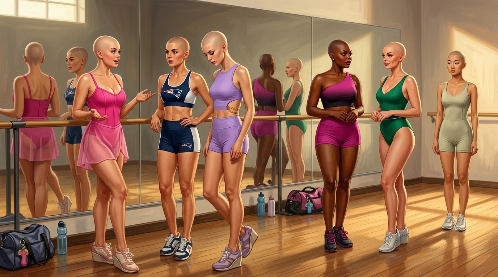
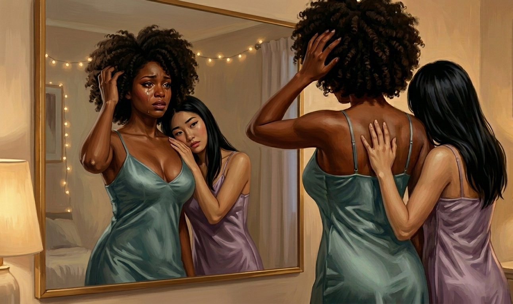

The bra took Charlie four seconds now.
Both hands behind his back, the band ends meeting, the hooks finding their eyes by feel, done. Exactly as Connie had promised, a week and you'll never think about it again, and the prophecy had landed on schedule and he hated how right she'd been. He hadn't thought about it. That was the thing he made himself notice, standing at his open drawer in the lamp-warm morning: he had put on a bra without thinking about it, the way he'd once put on a watch, and the not-thinking was the news, and nobody was going to report it but him.
He'd picked the t-shirt bra, the smooth seamless one, because the dress he had in mind was a thin clingy knit and the lace ones showed through it. He knew this now. He knew the lace ones showed through thin knits, and he knew the smooth ones were called t-shirt bras, and he knew the underwear in the second stack were called bikinis and the ones in the third were hipsters, which sat lower and squarer, and that the back of the drawer held a small folded constellation of things called thongs that all six of them treated like unexploded ordnance and Connie, with terrible patience, had said they'd come around on.
The vocabulary had gone in the way everything went in here, in passing, in labels, in Connie's running narration as she folded — the balconette gives you a different line under a square neckline, sweetheart, you'll want to know that — a hundred small deposits a day into an account he'd never opened, and now, a week on, he could stand at a drawer and think the seamless one, obviously, with the knit in under a second, fluent in a language he had no memory of studying.
He stepped into the bikinis. Pulled the dress from the closet — a skater dress, he knew that too, fitted bodice, flared skirt, in a blue Connie called cornflower and Charlie called the blue one in a doomed rearguard action — and poured himself into it.
He drew the zip up at his side without thinking about the zip. A week ago a side zip had been a small war. Now his hand found the pull at his ribs, caught it between two glossy nails, ran it up the track in one motion, and the dress closed around him and settled where it had been engineered to settle, the bodice taking the breasts and the skirt taking the hips and the waist nipping in to a line that was no longer a surprise to him, only a fact, the daily fact of the shape they'd given him.
That was the thing he'd been turning over for days, the thing he kept meaning to say to the others and not saying, because there was no light way to say it. Connie wasn't filling them with new people. Charlie had braced for that, in the early days, had lain in the dark sure that the next procedure would be the one that scooped him out and poured someone else in. It hadn't come. What came instead was smaller and worse, because you couldn't fight it the way you could fight a stranger moving into your skull.
They weren't installing who. They were installing how.
A thousand small competencies, sewn in one at a time the way the brows had been sewn in — how to read a closet, how to draw a zip blind, how to walk on a stair in the heels, how to take a small bite and set the fork down, how to put a hand to your own chest when you were startled — each one added bit by bit, Connie and the circuits working in concert. He woke each morning fractionally more fluent in a body that was still foreign to him.
Around the room, five others were doing the same thing, and not one of them was doing it the same way.
That was the part he'd started watching. Porter was already dressed and made-up to the extent any of them were made up — moisturizer, lip balm, the approved beginner kit — in a shirtdress, crisp poplin, belted, collar standing just so, and he looked like he was about to head to the country club. Hal had committed, with bitter and total thoroughness, to pretty: a pale pink wrap dress, the tie done in a bow he'd redone twice, and Charlie understood by now that it wasn't surrender, it was Hal refusing to back down from anything, even this, especially this. Peter had been drawn to the athletic-preppy corner of the closet on day two and never left it — denim skirt, cropped tank, heather green one-shoulder sweater — and moved through the morning with a jock's economy, dressed in ninety seconds. Jay's was bold, saturated, jewel-toned and body-conscious, clothes that walked in ahead of you and announced you. And Austin. Austin got dressed the way Austin did everything now, correctly and from a great distance, in whatever hung at the leftmost end of the closet, which today was a pleated midi skirt and a fine-gauge sweater in dove grey, an outfit so quietly expensive-looking it made the rest of the room look like they were trying.
Six girls, six styles, emerging like handwriting.
Charlie was fun. That was his register, the one Connie had built into his section of the closet. Sundresses and bright little skirts, sweet necklines, things that moved, the wardrobe of a girl whose entire job was to be glad you'd arrived. He looked down the row at the others' sections, the architecture of them, and you could read six personalities off the rail without a single person in it.
They weren't developing taste. They were being issued it, hanger by hanger, and the daily act of choosing — standing at the rail, considering, selecting, the small private pleasure he had absolutely started to take in it and absolutely refused to examine — was just the conditioning's customer-facing side. You picked freely from a menu somebody else had written, every day, until the menu felt like your own appetite.
He sat at his vanity and did the last thing.
The tinted moisturizer came in a small heavy bottle, weighted at the base, an object designed to feel like it cost something. Connie had started them on it the second morning — just this, for now; we build a face the way we build anything, one thing at a time — and it was the smallest possible cosmetic, barely makeup at all, and it was the first color Charlie had ever put on his own face by his own hand.
He warmed a pea of it between two fingers the way she'd shown him and brought his hands up and went into the strokes, the slow sweep along the jaw, the press out across the cheek, gentle, always up, gravity is not your friend, and he watched the face in the glass even and warm and brighten, the little flaws he hadn't known he had going quietly to nothing, and his hands moved through the routine fluent and unhurried, a thing they had not been able to do a week ago and could not now stop doing well.
He capped the bottle and looked.
A put-together girl looked back. Warm even skin, blue eyes wide above cheeks the tint had given color to, lips with their faint sheen, the whole of her assembled and ready and going somewhere.
And bald.
The scalp caught the vanity light and threw it back, a bare skull on top of a girl dressed for a garden party, and at the crown, when he turned his head and the light caught it, the faint sub-dermal patterning where the nodes sat under the surface, the circuitry that ran him, almost invisible and never quite. Everything below the hairline lied beautifully. The hairline itself told the truth. A girl this finished did not have a head like an egg. It was the one detail in the glass that still said something was done to me here, the one place the eye snagged and could not smooth over.
The last honest thing in the picture, he thought.
Breakfast was a normal girl's breakfast, but the Goo lurked just beyond every bite.
Yogurt in little glass dishes, a bowl of cut fruit, a French press going cloudy on its plunger, a rack of toast cut in triangles. No roast anything. No famine-breaking abundance. A spread for people watching their figures, which, Charlie understood, lowering himself into a chair, was now them. Connie had taken them to the mirrored room with the barre on the second day and framed it the way she framed everything, kindly, as care — now that you're back on solid food, my dears, we'll want to keep ourselves in trim; a lady looks after her figure — and put them through forty soft slow minutes of three-pound weights and stretches with names, all of it tilted toward grace instead of strength, all of it watched in the mirrored wall. The small portions and the barre made one seamless argument: this is your size now, and here is how you keep it, and here is why you'll never clean a plate again.
{kind=link}

So: yogurt. He sat and took the little glass dish and the small spoon and ate the way the body ate now, neat small bites. The yogurt was good. He could read that it was good. The pleasure came through thin, like the volume on that one channel had been turned down at the source. His shrunken stomach reported full almost immediately.
"This is so depressing," Peter said, around a wedge of pear. "Yogurt and a leaf. An' now I'm done aftah six grapes."
"You're done after eight," Hal said sweetly, not looking up from spreading the thinnest possible layer of jam on a triangle of toast. "Let's not exaggerate, sugar. It's unbecomin'."
"Bite me, Hal."
"I would, darlin', but I'm watchin' my figure." The dimple came out fully deployed, and a grim small laugh made its way around the table. The gallows register they'd built because the alternative to laughing in these voices was sitting in silence and trying not to look at the Goo awaiting them on a tray on the sideboard.
Hal smiled. "We look like a cancer ward havin' a tea party."
"We look like an ad," Porter said, not looking up from his coffee. "For something you take once a day."
"An ad for bald," Charlie said, and then he felt himself slip, just for a moment, and his eye went to the sideboard without meaning to.
The Goo sat there. Six dispensers standing at attention, phallic menaces they were all trying to ignore, patiently waiting beside the juice, warm in little coaster-cradles. Connie had never mentioned them again since that first dinner. They were simply present every meal, warm and available, and every meal all six of them did not have any, and the not-having had become its own silent meal-long event, six people declining multiple times a meal without a word, the held line held one more time.
Charlie's eye found the cradle and his chest answered. A simmer, behind the sternum, it had not grown loud and it had not gone away, it had only settled in to wait, patient as the rest of the house. It rose a degree when he looked at the cradle and sank a degree when he looked away. He'd learned to look away. And on the way back to his yogurt his eye crossed Hal's, going the other direction, coming back from the same sideboard.
Just a flick. A half-second's snag, the green eyes touching the cradle and pulling off it, the smallest tightening at the corner of the lovely mouth before it went on saying something cutting about Vane. Charlie caught it, and Hal caught Charlie catching it, and went back to his toast, and Charlie went back to his yogurt and let it go. But it sat in him. It meant the want wasn't only his.
"I had a dream we were home," Peter said, into the quiet, looking at the fruit. "All of us. I had my own face, an' I could heah myself talk right." He pushed a berry around the dish. "Then I woke up an' said good mawnin' to Portah and that was that." He didn't look up. "That's the worst part. It's not the mirruh. It's befoah the mirruh. When you say one wuhd an' you already know."
Nobody made a joke of that one. Even Hal let it sit.
"At least you knew it was a dream," Jay said, after a moment, the big voice gone small. "I keep havin' ones where it's normal. Just normal. Like this is how it's always been. Wake up an' for a sec I don't even —" He stopped. "Allow it. Pass the toast."
They heard footsteps in the hallway, and it was Connie, immaculate as always in her silver chignon, and three steps into the room she stopped, and her warm face did the small annoyed thing it did whenever Vane was about to be the topic of conversation.
Charlie had stopped trying to map the two of them. There was some old grievance there worn smooth, Connie's brisk maternal proprietorship rubbing forever against Vane's clinical contempt for her deliberate pace, she making them ladies and he making them female, each plainly certain the other was doing it wrong, and the six of them ate yogurt in the crossfire of it.
"Doctor Vane is here," she said, with the flat distaste she reserved for him. "Activities are cancelled for today. Please retire to the lounge, ladies, and he'll see you one at a time."
Hal went first. Vane had pointed at him with two fingers while the others looked on. "Of course," Hal had said, sugar over steel. "Ladies first, I'm sure." And he went, perched on his heels, the rolling gait, the blush sheath and the bare scalp, out the door behind Vane, and the door shut, and the five of them sat in the long person-shaped silence with what passed for leisure these days.
The crafts had been quietly demoted sometime in the past week. The embroidery hoops were still around, but Connie hadn't pushed it, and they found during their down moments they were drawn to the contents of the lounge. A stack of glossy fashion magazines, thick as catalogs, months out of date; a row of paperbacks with couples on the covers in various stages of windswept; a speaker system pre-loaded with music, serving a steady diet of bright girly pop; a neverending collection of romcom DVDs that played on the television like wallpaper.
So they waited. Porter took a paperback off the shelf, Jay flipped through a magazine, Austin and Peter and Charlie took the couch in front of the TV which was running one of the lounge's endless rom-coms. Two beautiful people in a bright city failing to admit they were in love, and Charlie curled into the corner of the couch and watched it, because watching it was better than thinking about the door at the end of the hall.
That was the mistake. The dread at least kept Charlie quiet. The movie gave the thing in his throat something to do.
"Okay, he's so in love with her."
Nobody answered. On screen the man was helping the woman carry an impractical number of boxes up a walk-up.
"Like he doesn't even — okay he doesn't even know it yet, that's the thing, but look at his face, that is a gone face, that is so a gone face. Omigod and she's gonna pick the wrong guy first, she's gonna pick the boring one, watch, there's gonna be a boring one with like a really good apartment — wait is that him, no — okay no but there's gonna be one, and then it's gonna be like forty minutes of her being sad in really cute outfits and then at the end she runs, omigod why do they always run, and it's always an airport, like nobody runs through an actual airport, you'd get literally tackled, that's not even—"
"Charlie." Jay didn't look up from the magazine.
"Oh! Sorry. Sorry sorry." He shut his mouth. He had been, in another life, the person who shushed people in movies. He was aware of the irony and could do nothing with it.
He pressed his lips shut and watched the boring good-apartment boyfriend get introduced precisely on schedule and said nothing about being right, which cost him more than anyone in the room would ever know, a whole-body clench against a sentence that ached coming up.
He made it almost four minutes.
Then the woman on screen laughed at something with her whole head thrown back, a real one, a good one, and the door blew open before he'd even felt himself reach for it.
"Oh — omigod, see, okay, that's why he likes her, right there, that laugh, did you see it, that's the whole — that is the entire movie right there, that one—"
A magazine page turned, hard, a deliberate vicious rustle. Porter, not looking over. Peter reached out without a word and thumbed the volume up two notches, putting the movie up like a wall between Charlie and the rest of them, and Charlie got it, got all of it, and folded back into the couch and went quiet.
He was quiet when the boring boyfriend got dumped. He was quiet through the fight in the rain. He was most of the way to quiet through the airport when the door at the end of the hall opened. It was Hal, and for a half-second Charlie didn't recognize him, and then he realized he'd stopped breathing, and every bright thing in his throat died at once.
Hal had hair. Auburn. Deep and rich, red and gold and brown all running through it at once, and it had volume, it stood off the scalp and fell past the shoulder in a slow heavy wave, and it moved. Hal turned his head coming through the door and the whole mass of it swung and resettled and caught the light, and the heart-shaped face that had looked merely pretty under a bare skull was suddenly, violently, a bombshell, the hair pulling the high cheekbones and the wide rosy mouth and the too-wide green eyes together into one overwhelming fact.
And then Hal blinked, and the room saw the rest of it.
Lashes. Long and dark and dense and upswept, a full pageant set of them, so lush and so curled that the first thought in Charlie's head was falsies, the strip kind, the kind that came in a box, except there was no strip and no box and they moved with the lids like they'd grown there, because as far as the lids knew, they had. Every blink was an event now. Every blink fanned.
Hal stood in the doorway under their stares with his jaw set, batting eyes that batted whether he liked it or not, one hand rising involuntarily to touch the hair. He had left the room a beautiful unfinished thing, a doll with the wig still boxed. He came back a girl.
"Well," Hal said, into the silence, and reached up and ran a hand back through it, the auburn parting around his fingers and falling closed, the gesture as fluent and unasked-for as everything else. "Don't all y'all faint at once."
Porter went next and came back sleeker: dark blonde, dead straight, falling in one polished sheet to his collarbones with a part so clean it looked drafted, and the lashes again, though on Porter they'd been installed at some more restrained specification, long but unfussy, framing the cool grey eyes instead of staging them.
Peter next, and came back with chestnut in a heavy rope past his shoulder blades, already pulled back from his face with an elastic into a high ponytail, which he scowled at as if it had personally insulted him.
Then Vane's two fingers found Charlie.
The room was small and clean and there was a chair in the middle of it, a high reclining chair upholstered in something soft, and an armature folded above it on a jointed arm that held a machine, and the machine held his head.
It had come down from above over his head, a crown of dark metal, open-ringed, studded on its inner face with a dense array of fine apertures, and it had settled over his bare scalp and clamped at the temples and the base of the skull, and Vane worked at a console somewhere behind him where Charlie couldn't turn to see.
"This will take some time," Vane said. "It should not be painful in any meaningful sense, though it might be unpleasant. I'd encourage you to find somewhere to put your mind."
"What is it, like, going to—"
"Each follicle site is opened, a filament anchor is seated and fused to the skull, and the filament is extruded to its specified length and cut." A pause; the small sounds of settings being entered. "The filament is a polymer. It does not split, fray, fade, or break. It cannot be cut by anything you will ever have access to, and it does not grow. The length you leave this room with is the length you will have. Texture and wave are set in the extrusion. The tone is varied filament to filament — no two adjacent strands identical."
Charlie felt the machine come to life and a single point of it touched the dead center of his forehead.
"Um, like, permanent length? As in permanent permanent? Can I, like, request something short—"
"I'm afraid not. Let's begin. We set the edge first, one site at a time. The hairline is what the world reads, so we place it by eye. Once the boundary is fixed the fill goes quickly. Hold still."
The first sensation was the puncture — a sting, bright and tiny and immediately familiar, the eyebrow needles' big sister — and then a point of heat as the anchor fused, a hot pinprick that bloomed and died in half a second, and then the strangest part: the extrusion. A filament being drawn out, attached to the seated anchor, and he could feel it, feel the glide of it traveling out of his own scalp, like a hair being drawn out of his head except inward-out and endless. Three inches, six, ten, the strand growing in one continuous second what a real one grew in years, and then a minute snick as the cutter took it to length, and the finished filament fell against his brow with a tickling whisper of contact.
One lone, fine hair, barely visible dead center. Then the next, a hair's breadth to the side. Then the next.
It tracked along the hairline first, sewing-machine fast, a rapid stitching chatter of sting-heat-glide-snick traveling a single point at a time stitching out from the center of his forehead toward the temple, the device moving in tiny precise increments, laying down a boundary one point at a time. He felt it round the corner at his temple and start down the side of his skull, past the ear. It crossed the back of his skull where he couldn't feel it cleanly, a band of small stings traveling the circumference of him, and came up the far side, temple, forehead, and closed the loop at the center where it had started.
Then the machine accelerated, dropping into a register he felt in his teeth. A dense fast chatter, and the field inside the boundary began to fill. Not one site at a time anymore — banks of them, the armature seating and extruding and cutting in rows, a dozen follicles in the time the edge had taken for one, a sewing-machine roar of sting-heat-glide-snick sweeping back and forth across the defined area in disciplined passes, and Charlie sat clamped in the chair and was planted, like a field, row upon row, the hair racing in behind the perimeter to meet itself at the crown. He went looking for somewhere to put his mind and found to his horror that the leftover voice had somewhere already picked out — omigod it's like getting your hair done, we're literally at the salon — and he held his jaw and swallowed it, because he would not let the thing in his throat make this nice. The brows had been a handful of these. This was a field of them, filling fast now, and he settled in to lose ground the way he lost everything now.
The weight was the thing nobody could have warned him about. It came on faster than he could brace for once the fill found its speed, warmth and drape gathering by the minute, the front, the sides, the back of his skull where the heaviest growth went in, until well before the machine was done his head was carrying a mass it had never carried, a soft live weight that flowed around him, brushing his neck, whispering at the tops of his shoulders, announcing itself with every shift like the skirt of the cornflower dress: a consequence, attached to him, following him around.
When the crown finally lifted away he thought it was over, and then a smaller armature swung in from the side.
"Hold still now," Vane said. "This comes very close to the surface of the eye and I'd prefer you didn't flinch."
Two padded fingers of the machine took his eyelid and held it, gently, absolutely, the lid pinned open against its own blink, and the work moved in close, a fine instrument operating along the lid margin itself, at the wet edge of him, where every instinct he owned screamed at a sting that wouldn't stop coming. The same cycle as the scalp, miniaturized: the bright bite of the puncture, the pinprick fuse of heat, the impossible reverse-glide of the filament extruding, except here he could see each one arrive, a dark curved line swinging up into the bottom of his vision and parking there, then another beside it, a fence assembling itself along the edge of his sight one paling at a time. By the time the machine released the first lid and took the second, the world had a fringe on it. When it finished and let him blink at last, the blink had texture, a soft sweeping weight, the lids closing like something upholstered.
Vane straightened, retracted the armature, and made a note. He appraised Charlie with a contractor's where-do-we-stand eye, and said simply, "Good."
Charlie walked back down the corridor with his head moving wrong, feeling the weight swing and settle, swing and settle. He could feel it was long. He could feel it was a lot. He couldn't bring himself to look at it.
So the first face that told him what had been done to him was Jay's, when the door to the lounge opened, going slack. Then Hal's, the auburn head coming up from a magazine, and Hal's green eyes did a thing Charlie had never once seen them do, which was soften.
"Oh," Hal said. Just that.
"What," Charlie said. "What is it, what's—"
"It's blonde," Jay said. "It's — mate. It's really blonde."
He reached up. His fingers sank into it — into it, there was an into now — warm, heavy, impossibly soft, a slithering weight of it spilling past his shoulders and halfway down his back, more of it than he could account for. He drew a long wave of it forward at last, and he held a piece of his own head in his fingers: golden, catching the light, faintly varied strand to strand exactly as specified.
{kind=link}
"Sugar, we all knew you'd be blonde." Hal had come up off the bed, the auburn swinging. "You've been blonde this whole time on the inside. But I did not brace for — that is aggressively blonde. That is the blondest. Charlie, you look —" and he didn't finish it, because he didn't have to.
"Yeah," Charlie said, faintly. "Yeah, it's — wow."
Charlie spent the rest of the afternoon at war with it.
There was so much of it. That was the fact the mirror hadn't even gotten to yet, the fact that arrived through the body, ounce by ounce, ambush by ambush: he lay down on his bed and sat on it, a bright line of pull across his scalp; he turned his head to answer Jay and a curtain of it swung across his face; he leaned over a magazine and it poured forward off both shoulders and landed on the page, and he pushed it back, and it came forward, and he pushed it back, and he understood within the first hour that this pushing-back was not a task that would ever be finished, that he had been issued a Sisyphean chore with no end date, a soft golden dependent that needed managing every single minute it existed.
It got in his mouth. It stuck to the balm on his lips. It found its way under him, against him, into the crook of his elbow when he crossed his arms. Eating required an entirely new procedure — gather, sweep, hold, lean — that the others were independently inventing at their own places, girls discovering hair-management in real time like a species evolving the same trait in parallel.
And the others weren't wrong. It was blonde. There was no moment it stopped being blonde. Every swing of it through his peripheral vision was a flash of gold, every strand he pulled off his lip was a bright filament held up to the light, and he had spent a lifetime not thinking about the color of his own hair — brown, unremarkable, invisible to him in every way — and now he could not go eight seconds without the new color announcing itself from some fresh angle. It was the loudest blonde. It was, he kept thinking, a specific blonde.
The blonde of the girl from the helmet, the voice that was now his. If a voice could have hair, his voice had exactly this hair — warm, abundant, catching every bit of light in the room, tousled in a way that read as a day at the beach rather than a failure of grooming — and it was attached to his head, permanently. Everything — the face, the hair, the dimples on the mask, the voice in his throat — was matching something else, some original document, some girl on a tablet who had been complete before any piece of her was installed, and Charlie was the installation site, and the installation was nearly done.
An hour later, Austin returned with black: glossy, absolutely straight, cut in one blunt merciless line just below the shoulders, a precision of hair that made his stillness look intentional, curated, and that was its own quiet awfulness, the way the new exterior kept manufacturing alibis for what was wrong with him.
Jay went last, and Jay was gone the longest.
It was full dark on the schedule, the lamps long since in their evening register, all of them changed into their nightgowns, when the door opened and he came into the bedroom, and the room — which had spent all day learning what to expect, which had absorbed five of these returns and built up what should have been a tolerance — went silent anew.
It was enormous. That was the first thing, the sheer abundant mass of it, a great soft cloud of dark coils standing up and out from the beautiful broad-cheeked face in every direction, full and high and rounded, the most hair of any of them by far, a whole structure of it. It did not fall the way the others' fell. It rose, held its own shape against gravity, moved all of a piece with a slow soft majesty when he moved. It was, objectively, magnificent. It was the most finished any of them looked, the most inarguable, the least possible to see past.
It was also, Charlie understood as Jay crossed the room, the loudest thing that Vane had built yet. His own blonde announced him; he'd felt it announcing him all afternoon. This announced Jay from every direction at once. It changed the size of him in a doorway. It would enter rooms a half-second before the rest of him and would stay visible across any distance the room could offer, a silhouette you could read at a hundred yards. There would never be a single moment, in any crowd, in any light, for the rest of his life, when Jay was not making a statement.
He walked in slowly, not meeting anyone's eyes, and stopped in front of the long mirror where they had all been taking turns avoiding and looking, avoiding and looking, all day.
"Look at it," he said.
Nobody moved.
"Nah, I mean it. Look at it." He turned his head one way and the great halo turned with him, and back, and it followed, serene and enormous. "Yours all just — sits there, dunnit. Yours hangs down and behaves itself. You could put yours under a hat. You could tie yours back and be nobody, any of you, you could disappear in a crowd tomorrow." His hand came up, hovered beside the coils, didn't touch them. "There's no hat for this. There's no behind-the-ears. It goes out sideways. Every side. I take up — look how much of the mirror I take up."
"And he said it can't be cut." He said it to his own reflection, the big voice gone strange and flat and quiet. "Vane. He told me while he was doin' it. Goes — it's permanent, yeah. Says you could take shears to it an' it wouldn't —" He stopped. "You can't cut it, you can't lose it, you can't burn it off or shave it. It's just there. Forever." His hand made a small motion toward the cloud of it and stopped before it touched. "This exact — for the rest of my — "
He stopped, because a chair had scraped.
Austin was up. Austin — who hadn't crossed a room of his own will in a week, who went where he was led and sat where he was sat and looked at the middle distance with the lights off — Austin was crossing the room and his hand was rising as he came, reaching out toward Jay's shoulder, and somewhere in the last yard of it Charlie watched Austin arrive back inside his own body. Watched it happen. The eyes came home. The hand finished its reach and landed, and it landed meaning it, fingers landing between Jay's shoulderblades, and Austin stood there blinking like a man stepping out of a dark theater into afternoon, his cheek gently on Jay's shoulder, looking at their beautiful and horrible reflections in the mirror. Present, suddenly, completely, dragged the whole way back to the present.
{kind=link}

"Jay," Austin said. "It's okay."
Jay's face did several things at once and then gave up on all of them, and the tears came, and Austin's other arm went around him, awkward and absolutely determined, the smallest of the six holding the most abundant, and over the dark coils Austin's eyes found the rest of them in the mirror — alive, frightened, back — and Charlie was on his feet before he knew it. He put his arms around the both of them, around Jay's heaving back and Austin's narrow shoulders under the black hair, and pressed his face under the dark coils that gave and would not yield, and held on.
Then the chestnut bowed in beside him, Peter, saying nothing. Then Porter, folding down into it without a word. Then the auburn came over all of them, Hal last, his cutting voice nowhere, just his arms.
Six of them, in the lamplight, in front of the long mirror not one of them was looking at now. Nobody said anything. There was nothing that needed saying, and no voice among them that could have said it right anyway, and they stood in the warm dim and held on to each other.
That night Charlie was the last one at the vanity.
The room behind him was settling, the slow business of five exhausted people learning to sleep on the new weight, the braiding and the gathering, Peter's elastic suddenly the most valuable object in the building. Hal's auburn spilled across a pillow. Jay and Austin had fallen asleep mid-conversation, two beds pushed together, their hands intertwined.
Charlie brushed, and watched the girl in the mirror brush.
The fiber took the brush, parting around the bristles and falling, gathering and releasing, no snag, no tangle, behaving precisely as advertised, perfect every time, and that was its own small wrongness, the perfection of it, the way real hair never behaved this well, the brush meeting no resistance anywhere in the whole bright length of it. He brushed it anyway. It was, he'd discovered, soothing. He hated that it was soothing.
He looked at the girl in the glass brushing, and thought about the same vanity twelve hours ago: the put-together girl with the bare skull, the one wrong note, the bald head that had been the last honest thing in the picture. The day had done nothing but close the gap between that reflection and this one. This morning there'd been a seam, a place the eye snagged, a detail that still said prisoner. Tonight there was none. She looked like nothing had ever been done to her, like there had never been a Charlie, like the whole concrete months had happened to someone else somewhere else, and she was what was left, golden and finished and faintly, perpetually delighted around the eyes.
A finished ordinary girl all the way to the edges, nothing to point to, nothing left to argue the case, and the baldness that had been on his side this morning was gone under the gold, and the circuits that had pressed back against his palm were under a roof now and would never be seen again.
The final touch had taken six victims of an atrocity and made them six girls and buried the evidence so deep that no one who ever met them would have a reason to look twice.
He stopped brushing. She stopped. She was not a catastrophe, and she was not a construction site, and she was not a stranger.
There she is.
He heard it in her voice. Warmly, fondly, with the satisfaction of a long wait ending — there she is — and the horror arrived slower than it used to.
The first night, the horror had flooded up cold and right and his, the worst thing that happened all day, and he'd been grateful for it, had clung to it, because horror at least was still him. He waited for it now. He looked at the finished girl in the lamplight, gold and soft and ordinary, brushing her hair before bed, the most unremarkable picture in the world, and he reached for the cold flooding thing that was supposed to come up to meet her.
It came late. It came quiet. And in the half-second before it — in the clean bright gap between the girl assembling in the glass and everything he knew crashing down on top of her — Charlie had been glad to see her.